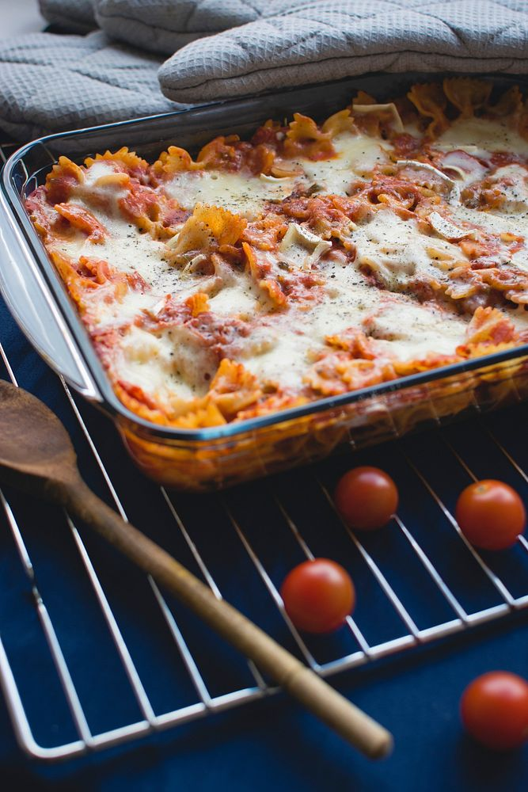

Tex Mex Lasagna

Great tex mex spin on lasagna
This recipe came from Piggly Wiggly at some point in history, at least that is what the paper in the cupboard says. All I know is that it tastes great!
Ingredients
- 1 pound ground beef
- 2 jars (16 oz each) TACO BELL HOME ORIGINALS Thick N' Chunky Salsa
- 1 can (15 oz) whole kernal corn, drained
- 12 corn tortillas (6 inch)
- 1 package (8 oz) VELVEETA Mexican Shredded Pasteurized Prepared Cheese Food
Instructions
- Brown meat in large sklillet, drain. Stir in salsa and corn
- Spoon 1 cup of the meat mixture into a 12 inch by 8 inch baking dish.
- Top with 1/2 each of the tortillas, remaining meat mixture and process cheese food; repeat layers
- Cover with foil
- Bake at 375 degrees fahrenheit for 20 minutes. Uncover. Bake an additional 5 minutes or unitl process cheese food is melted and mixture is thoroughly heated. Garnish with BREAKSTONE'S OR KNUDSEN Sour Cream.